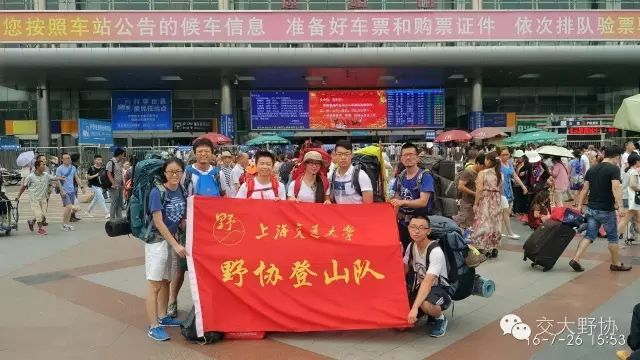
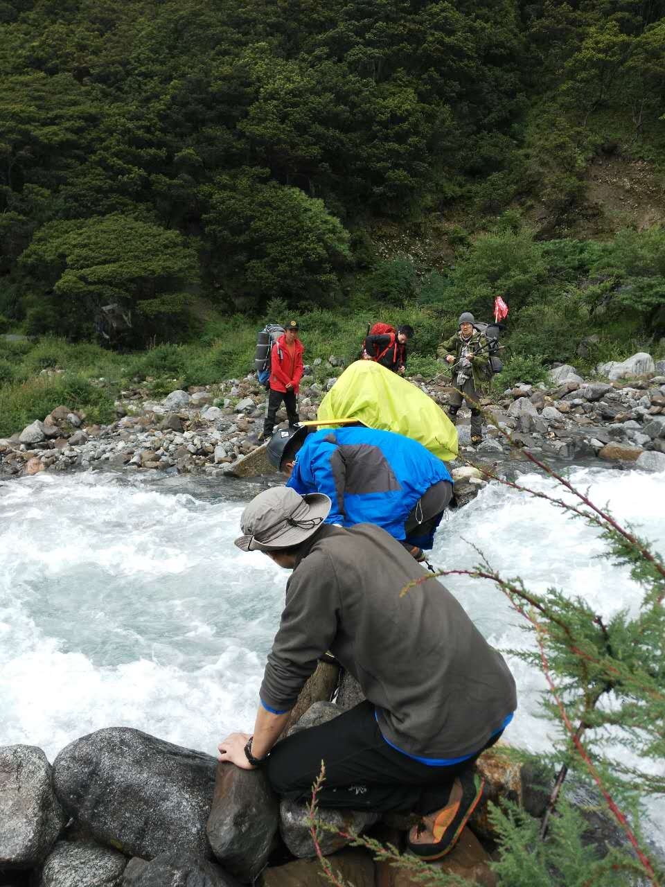

发信人: jinqingxu (宫野恋雪), 信区: outdoor
标 题: 2016年那玛雪山队记总结
发信站: 饮水思源 (2016年11月16日15:09:21 星期三)
7月25日：
从上海出发前往成都，早上8点半光体集合，前往上海火车站。进站前南站发生了一场垃圾
桶火灾风波，特勤的执行效率真是让人唏嘘。
screen.width - 200){this.width = screen.width - 200}">
火车上打打斗地主，玩玩狼人，在车厢里爬爬线，一天很快就过去了。
7月26日：
白天依旧在火车上消磨时光，下午三点多到达成都站，李冰锐来接车。
 screen.width - 200){this.width = screen.width - 200}">
到达成都到拖板鞋checkin以后吃了六年一班串串，吃得有点多，肚子有些涨。
screen.width - 200){this.width = screen.width - 200}">
吃完后去青旅打了一会儿台球，吃了点西瓜。

晚上开会讨论第二天的采购清单，罗列每天要吃的食物以及具体的份数。讨论的时候发生
了一些争执，有的食物有些人不想吃，可是有一部分食物比如方便面土豆泥等已经在网上
采购好了。当时网上采购的时候恰逢考试周，食品清单列出来大家都没仔细看，导致买好
了以后意见很大。定好了采购清单，已经晚上12点了。
7月27日
睡到中午，去家乐福买食物，遇到的问题是肉类无法保鲜和士力架太贵。当时发现网上买
士力架要便宜很多，但是来不及运过来。解决方案是用脆脆鲨代替一部分士力架，以及买
500g干鱼代替肉类，不足的都用火腿代替，下次这些都可以在网上买好（事实证明下山以
后剩了很多肉类，鱼干也没有吃完，山上吃肉需要消化更多的氧气，而且高原上也没什么
胃口，建议肉类少带一些，士力架也是，比较不好下口，我只在冲顶那天吃了一根，有的
人都没吃）27、28号住的都是熊猫夫人青年旅社，条件没有托板鞋好，床的扶手容易掉。
晚上特别辛苦，要把买的食物按照昨天的每日食品计划分装好，在袋子上注明“day1中”
这种字样。另外，路餐也需要按照人头分袋，每人一袋。然后把多余的食物以及文颖那份
拿出来，寄存在成都。
7月28日
这天没什么事要做，在成都自由活动。周志明、小蚊子、何敏、孙瑞田四个人去了生存者
岩馆攀岩，我、大爷和庞博三个人在成都逛了一天。晚上给孙瑞田过生日，蛋糕大战。
7月29日乘车从成都前往康定
6点半 起床
8点10分 开车
12点40到休息站 吃饭的地方很坑，价格特别贵
13点15 继续开车
17点12 到达康定汽车站
在康定买了一些苹果，梨，黄瓜，补充维生素（山上太冷，梨和黄瓜后来都剩了很多）
孙瑞田晕车，没吃晕车药，一天没吃东西。
晚上住贡嘎青旅，睡阁楼和蒙古包帐篷。
到了康定已经海拔2000多了，有些冷，我们换上长裤，穿上冲锋衣。
我和庞博感觉有一点感冒。
晚上把绳子截成一定长度，用火烧了一下绳头。
7月30日乘车从康定前往上子梅村
7点 起床
8点15 吃完早饭
后来快上车的时候出了点问题，由于向导没有沟通好，来了两个司机，后来没办法，只能
付了油费打发掉了其中一个司机。
8点36 上车
12点05 到达沙德乡吃午饭
12点59 吃完饭
14点 重新上车
15点14 下雨了
18点45 到上子梅村了
21点10 吃完晚饭，开会讨论食品分配。然后清理不必要的装备，减少路绳只带300米，向
导说，那玛峰上没有裂缝，不用带救援的绳子。上子梅村的海拔已经有3500，头有一点晕
，我，庞博，大爷和孙瑞田打了几局牌，情绪有些激动，后来就有些头晕了。高原上要保
持心态平稳，不易激动和喊叫。
24点 睡觉
7月31日从上子梅村前往BC
6点30 起床
7点36 吃饭
7点56吃完早饭
8点07 拍赞助照
8点15 出发
8点28 脱衣服
9点18 休息
9点29 出发
9点57 我出现了高反的症状，大家下包休息，队医给我吃了一片止痛药。
10点34 到达贡嘎寺，下包休息，喝酥油茶。从上子梅村到贡嘎寺的这一段路是比较好走的
泥土路，摩托车都可以开上来。
10点49 上包出发
11点25 过河，独木桥非常滑，一旦掉下去就会被水冲走，过河的时候强哥带着马匹从后面
追上来了，跟我们会合。
 screen.width - 200){this.width = screen.width - 200}">
11点30 马和人都过了河。
11点44 遭遇第二条河
11点48 过了河
screen.width - 200){this.width = screen.width - 200}">
12点16 休息
13点02 下雨了山上变得很冷，全队到达草甸，下包穿抓绒衣。原计划是到草甸吃中饭，由
于下雨只能继续走
13点45 雨停了，在草甸碎石坡下包吃中饭。
14点09 马匹从BC上下来，吃完午饭，上包出发
15点08 到达山谷之间，下包休息，孙瑞田出现了高反的症状。
15点14 穿上抓绒
16点02 全队到达BC,开始搭高山帐。吃饭的时候我们用手机测了一下脉搏和血氧，大家都
还算正常。
screen.width - 200){this.width = screen.width - 200}">
今天的地形是泥土路——》碎石坡——》高山草甸——》碎石坡——》长了青苔的大石头
——》平地草甸
19点30到20点20 吃完饭开会讨论，决定不在BC休整，直接上C1
20点20 为了不过早睡觉，我们开始聊天，庞博也出现了头痛的症状，我，孙瑞田和庞博都
吃了止痛药睡觉
21点05 睡觉 高原上一躺下就喘不过气，不时地坐起来，没怎么睡好
8月1日 从BC前往C1
7点 起床
9点31 吃完早饭，上包出发，前往C1
10点22 我头痛的不行，休息的时候吃了点药
10点48 在碎石坡休息
10点55 出太阳了，地形依旧是碎石坡，海拔离BC上升了200米左右，下包休息
11点 上包出发
12点02 吃午饭（路餐），现在的地貌是草甸
12点15 出发
13点29 所有人到达C1，水源离营地大约有20米
今天的天气是一开始下雨，后来有点下冰雹，非常冷。
screen.width - 200){this.width = screen.width - 200}">
到了C1以后出了一会儿太阳，晒了睡袋，后来马上又下雨了。今天的地形主要是碎石坡和
草甸，快到营地的草甸非常陡。
15点30 开始技术训练，练习上升下降过节点。原计划下降时要带一个抓结做保护，由于之
前没有练过，担心在冰坡上耗时太久，决定还是不用抓结。刚到营地那会儿我把鞋袜脱了
晾干，风一吹可能脚有点受寒，这时我出现胃寒的症状，肚子非常痛。
17点10 吃晚饭
19点30 拍赞助照
19点42 开会，决定不在C1停留，明天一早冲顶
21点14 睡觉
8月2日 冲顶下撤到BC（由于队记高反很严重，很多时间点都没记）
2点 起床
在海拔4900的地方一起来就有些恶心，很多人土豆泥都倒掉了，最后硬逼着自己吃了一点
肉松饼。
3点24 吃完早饭，出发，晚上特别黑，碎石坡非常不好走。
4点15 修路队和非修路队拉开距离
4点34 休息 我的高反越来越严重了，止痛药已经无法缓解头痛。
5点 休息
5点50 休息，喝水
6点13 非修路队到达冰川末端，修路队已经准备好装备，开始修路
大约8点 修好了路，大家都上了垭口的陡坡，开始结组，一开始约定15步休息5秒，后来体
力不行，休息的次数越来越多。结组行走的时候我和孙瑞田的高反已经非常严重了，我有
些意识模糊，心跳得特别快，整个人都有些浮肿。
10点多的时候 全队登顶，此时我已经连站起来的力气都没有了。
screen.width - 200){this.width = screen.width - 200}">
然后是艰难的下撤，我和孙瑞田都高反得无法自行走路，前一队结组的队医掏出两粒伟哥
（西地那非可以扩张血管，提高血氧量），埋在了一个据说半径为50cm的坑中。后来那个
坑可能是被谁踩了一脚，变得跟周围的雪坡一模一样，队长在雪坡上找了半天也没找到。
。。。快要放弃的时候终于找到了（现在想想特别好笑，在5500的地方找伟哥）吃了药以
后我没什么感觉，孙瑞田好像稍微精神一点了。我们这一队结组除了我和孙瑞田，还有队
长周致民和协作小牦牛，我们把结组绳解开，小牦牛把自保和我的自保连在一起，我坐在
雪坡上他把我直接拉下来，就像滑雪一样。周致民那边一个人拖不动，后来何敏上去和周
一起把孙瑞田也拖下来。
到了之前布绳的地方，小蚊子，强哥先下到下面的节点去打保护，然后庞博、大爷依次下
去，然后是孙瑞田自己下去，接着我和队长一组，每个节点队长先下去打保护，我再下去
。最后是何敏和小牦牛一组收绳，双绳降。雪镜很容易起雾，我只能看清绳子，意识有些
模糊，多亏了平时技术训练次数多，凭借潜意识下降操作也没出什么差错。在冰坡上带着
厚手套开锁真的超艰难，我有些恐高，下降的时候往身后看了一眼，队长在很远很远的下
面，那一刹那的恐惧这辈子都忘不了，生怕一松手就滑坠。
13点15 全队下到冰川末端
我依旧体力不支，小牦牛把我驾着下了山。孙瑞田因为没吃早饭低血糖，小蚊子和周志民
把他架下来的
到了C1，休息，烧水，收睡袋。
约三点多从C1出发往BC下撤，这一路又是非常艰难，大约7点多到了BC。
依旧没什么胃口，大家简单地吃了点东西就钻进睡袋睡觉了。
8月3日从BC下撤到上子梅村，然后乘车前往康定
7点 起床
8点30 上包出发
刚一出发我脚踝那一圈就疼痛难忍，估计是鞋带没系紧，磨得很疼，队医帮我缠了一圈胶
带，还是非常疼。后来干脆把上面的鞋带解开，把高山靴当低帮鞋穿，才稍微好一点。
12点45 到贡嘎寺，此时脚疼得已经没知觉了，喝点水，吃点路餐，后面要一鼓作气回到上
子梅村。
后面长达1个半小时的路都没有休息，走到后面意识又有些模糊，但是不敢停下来休息，害
怕一停下来就再也站不起来了。一路小跑下山，队长在身后唱歌。快到的时候小牦牛给了
我一把覆盆子，真是世界上最好吃的东西。
2点15 到达上子梅村 喝着可乐，吃上白米饭，感觉又活过来了。
15点53 运装备的车坏了，我们集合下车慢慢往前走，这辆车去拉坏掉的那辆车。
大约11点到了康定，预定的青旅特别坑，在一座山上，我们checkin了以后，出来吃点夜宵
，跟协作们告个别。回去洗完澡已经两点多了。
8月4日乘车从康定回到成都
6点30 起床
8点 上车
大约4点 到达成都
晚上住了48青年旅社，队长请大家吃了顿火锅，恰逢火锅店停电，吃了顿汗流浃背的烛光
火锅。至此，这段攀登旅程正式结束。
总结：作为一个今年4月才加入协会的户外新手，当初加入雪山队也是全凭一股冲动。事实
证明，出线经历太少，做事情不太注意细节，不太会评估自身状况执意冲顶这些问题很可
能会将我置于非常危险的境地。感谢队友和协作一路不离不弃。
--
※ 来源:·饮水思源 bbs.sjtu.edu.cn·[FROM: 10.189.91.8]
|